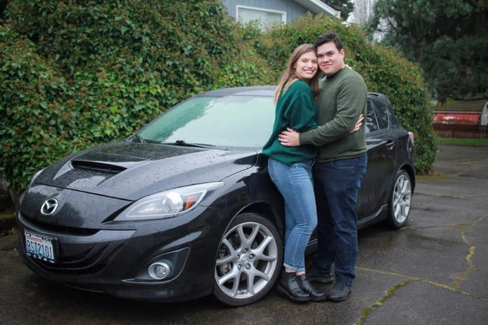

My name is Aaron and some things about me are that my wife and I have two wonderful children ages 1 and 3 and another thing is that I am currently an electrician, I enjoy being an electrician but I also love to learn new skills which is why I am going after a degree in this field.
About me

Washington state
Washington state is where I call home, I have lived in the north western part of washington my entire life, I live in the great skagit valley we are up against the ocean on one side and mountains on the other I may be biased but it is one of the most beautiful places I have ever been.